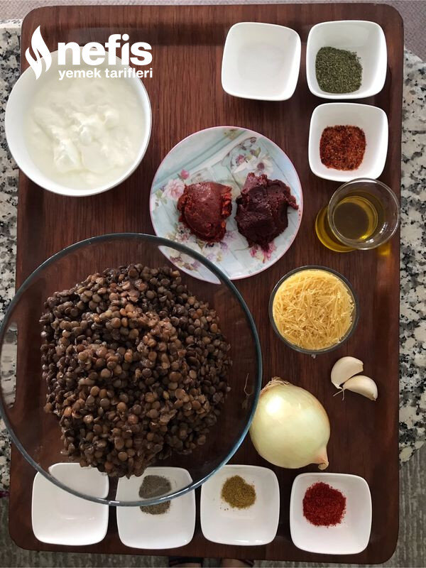

🍽️ 4-6 kişilik⏱️ Hazırlık: 20 dk🔥 Pişirme: 25 dk🏷️ Hamur İşi Tarifleri🏷️ Mantı Tarifleri
Malzemeler
- 1 su bardağı tel şehriye( arpa şehriye de olur)
- 2 su bardağı haşlanmış yeşil mercimek
- 1 büyük soğan
- 1-2 diş sarımsak
- 1 çay bardağı zeytinyağı
- 1 tatlı kaşığı toz kırmızı. biber
- 1 çay kaşığı karabiber
- Yarım çay kaşığı kimyon
- Tuz
- 1 su bardağı sıcak su
- 1 kahve fincanına yakın zeytinyağı
- 1 yemek kaşığı domates salçası
- 1 yemek kaşığı biber salçası
- 1 tatlı kaşığı kuru nane
- 1 çay kaşığı pulbiber
- Tuz
- 2 su bardağı sıcak su (kontrollü eklenecek)
- Yarım kg yoğurt
- 1 diş sarımsak
- Tuz
- İnce kıyılmış maydanoz
Hazırlanışı
- Önce mercimeğimizi haşlıyoruz.
- Soğanı ince ince kıyıyoruz.
- Sonra 1 çay bardağı zeytinyağını tencereye alıyoruz.
- Şehriyeleri ilave ederek hafif renk alana kadar kavuruyoruz.
- Soğan ve kıyılmış sarımsağı da ilave ediyoruz. Tuz ilave ediyoruz.
- Ocağı kısarak arada karıştırarak soğanları iyice kavuruyoruz.
- Soğanlar da iyice kavrulunca baharatları ilave ederek 1_2 dakika daha kavuruyoruz.
- Mercimekleri ve sıcak suyu ekleyip karıştırarak tencerenin kapağını kapatıp suyunu çekene kadar kısık ateşte pişiriyoruz.
- Bu arada sosu hazırlıyoruz. Küçük bir tencereye zeytinyağı ve salçaları alıp 2_3 dakika kavuruyoruz. Baharatları ve sıcak suyu ekleyerek hafif kıvam alana kadar pişiriyoruz.
- Servis için yoğurt sosunu hazırlıyoruz. Yoğurt, tuz ve ezilmiş sarımsağı karıştırıyoruz.
- Yemeğimizi servise hazırlıyoruz:. Suyunu çeken mercimekli karışımı tabaklara paylaştırıyoruz.
- Salçalı sosu üzerlerine gezdiriyoruz.
- Sarımsaklı yoğurdu da üzerlerine paylaştırıyoruz.
- Maydanozu tabakların üzerine serpiştiriyoruz. Sağlıklı nefis mantımız hazır. Afiyet olsun 😊.